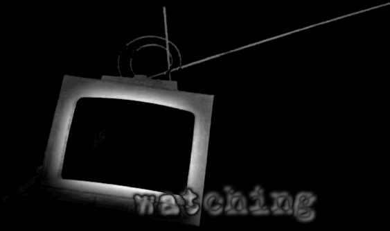

| The bass helps... no matter what Dana says.
Something to focus on, a solid rhythm of synth drums or sticks on metal or pounding feet or whatever some Ukranian mixing AI decided had the perfect sound for a new disc. Doesn't matter what it is, as long as it keeps me awake. It's twenty past midnight and the music is grinding my brain to paste. I'm up here on the roof, soaked, waiting for the lukewarm drizzle to stop and watching the occasional car slink through the shadows and streetlights four stories below. Waiting for Dana to get here so she can take her shift, watching the little window in the building across the street through the little eyepiece on the minicam. Waiting for the little people to get home and do their little things, so we can get our little pictures and drop off our little package and get our little paycheck from whoever cared enough to hire us for this job in the first place. Stakeout jobs suck... I get more kicks watching traffic. 'Least the traffic's doing something. The bass pounds in my ears, throbbing. I stop sulking and press my cheekbone to the cup of the eyepiece, then click up the zoom a couple notches. "Clock," I mumble, and it pops up in my peripheral vision on the viewfinder. I've been here for eleven hours and thirty-seven minutes and twelve seconds watching this apartment... Thirteen. Fourteen. Fifteen. You get the picture... I mumble the clock away and search around through the window, looking around what I can see. Again. Papers on the desk. Room's too dark to read 'em, even with zoom. Classy drapes, floral print. Didn't notice those last time I looked, forty three minutes ago, and it keeps me interested for a few nanoseconds. Television, still on since a timer in the apartment clicked its connection open this afternoon. It's tuned to something stupid from a feed Stateside. Cops bark mutely at perps on the screen, audio trapped in the room. I could listen to it if I wanted to, jack my headphones into the camera as a laser flicks out against the window and measures the vibrations... but I like my music better. It doesn't matter if I listen or not; all the audio, all the footage, it's getting spooled to the box I'm sitting on, crammed full 'a RAM. That's what sucks about these watcher gigs -- when it gets right down to it, all you do is babysit the camera rig and the RAM. You make sure it doesn't break. Get stolen. Get knocked over and spend four days takin' footage of the grit and metal scraps nobody bothers to clean off the roof up here. Most important, you make sure the mark doesn't notice the camera staring when they look out of their window and wonder what the odd shape on the roof across the street could be. Whoever lives there hasn't showed up yet. I'm running out of music. The rain hasn't stopped. Dana should be here in twenty minutes. Then I can catch a bus and crash back home and play dead for eight and one half hours in the comfort of my own bed. And she can have her twelve hours of fun. We've been on shifts for a week now, taking turns watching the camera watch the apartment, wondering which would run out first; our patience or the money from whoever hired us to sit here. I wouldn't even be here, really, if it weren't for Dana... she's the one who found out about it, told me the same night. You get all kinds of offers when you freelance, you do a lot of these surveilance gigs to make ends meet when you start out... this one's a little weird though, cause it pays good. Don't stare in the horse's mouth, Dana said when she was selling me on it, and I agreed. I don't even know who's hiring us, but the pay's by the hour, with a sweet bonus in mixed rubles and pounds when somebody shows up and we deliver footage of it. For that, I can put up with the boredom. I blow ten minutes trying to read the open magazines on the apartment's coffee table but things get fuzzy when I try to zoom that far. There's a light switch on the far wall and the plaster is punched in next to it, like somebody hit it moving furniture or something. I lose interest and pull away from the eyepiece, closing my eyes tight and blinking to get them focusing right again... I think to myself, she'd better get here on time, or I won't be awake for the hello. That's when she calls -- I take it on my headphones. "Jay? I can't make it by one," Dana says to me, muffled, and I kill the music so I can hear her better. "I think I'm in trouble, and there's somebody following me..." This doesn't surprise me so much as it irritates me, crass though it may be. Dana's always crossing someone. I sigh. "Just ditch 'em by three, and get here, okay?" I lean forward, squeegee rainwater off the camera's eyepiece with my thumb, and look through it at the window again. Still boring. She's silent, the crackle of an analog connection filling the air, and for a second I get a twinge of conscience. "Watch your back, 'K babe?" The earphones pick up my voice, rumbling through the bones in my skull, better than a mike would in this weather. Easier to wear, too. The connection clicks shut without an answer, and for a second or two my neck prickles, rainwater-wet skin crawling. I sit there, not moving, and notice that without the music, the rain is pretty loud. === At half past three I realize I'm sleeping, dreams of cars and hostages and paychecks and margaritas interrupted by an annoying, insistent chirp. The camera, screaming at me to wake-up-you-idiot-and-take-a-look... because something's moving. I startle awake, find a wicked icy hot cramp in my right leg, and blink sleep out of my eyes as I grope for the viewfinder. It takes me a minute to realize what I'm staring at, half blurry eyes, half blurry image, and I screw with the controls for a minute to get everything to snap into focus. Apartment light on, television off, magazines on the table shoved off onto the floor, table covered with junk and trinkets, coat on the couch, money in my hand when I get this footage delivered... God, /yes/! This is it, I'm thinking, and a shot of adrenalin hits my bloodstream at the thought of all those blessed decimal places in our account. There's a guy wandering around in there, pacing, and he's got his back to me so I can't see his face, but it doesn't matter because he's probably been in there for a while, and the cam's been recording everything. I do a fast zoom on the table, see lipstick and a gun and a pack of stims and some other junk, the contents of somebody's purse dumped out maybe. Guy's a petty thief or something? I don't know, who cares. We've got him! It takes me a minute to even remember Dana, but now's not the time for guilt. I mumble "Chat" and whisper out her portable phone's number, thanking God in Heaven above and all his angels individually for whatever they did to get this guy to come home. I zoom out, and there he is, nursing a drink in a glass tumbler, which probably means he's been home long enough to relax. "Hi, this is Dana," chirps a buoyant voice. "I'm probably getting high or filming something, so just leave a message or something and I'll get back to you when I'm done, bye." It takes a second for the shill scream of her phone's beep to register. Leave a message, Jay. "Ahhh, Dana, it's me, he showed up, I'm getting it all, ahh.." I get distracted and my voice trails off. The guy is leaning over, sifting through the stuff on the table and he picks up a little black thing and turns it over in his hand. "We got us our bonus, Dana babe, I don't know what you're up to be get your butt over here and we can celebrate, got it?" The thing is small enough to fit in his palm, and when I zoom hard-and-blurry it turns out to be a portable phone, kind of like the one Dana carries with her. Like the one I'm calling. "User Dana Malcolm is within fifteen meters, do you wish to beep user?" answers the clean voice in my ear, Dana's portable phone. I mumble a yeah and kill the connection, still watching this guy. He's built like a bull, I'm thinking, which probably makes him a hitter. I don't recognize his face but he's got blond hair and a pair of blue-tint shades that keep his eyes a secret. Suddenly the guy almost drops the phone, like it grew a hand and tried to flip him off. He opens it up and jams a finger at one of the buttons and now the skin on the back my neck is getting that freakish crawling feel again. Oh God. I fumble for the jack on the camera, shoving the cable for my 'phones into the audio out, thumb the volume control and feel my stomach cramp as I hear my own voice inside the apartment, tinny and muffled -- "...get your butt over here and we can celebrate, got it?" For half a second I think to myself, I sound different when I leave a message, don't I? But that doesn't stay for long because the guy looks up, staring right at me through the window. He smiles, even though he probably can't see me in the dark at this kind of distance. "Close window," I hear him say in the headphones, and then it snaps to black, peizo-electric glass shifting opaque at the command. Oh God. Dana. === It takes me three minutes to get down to the ground floor taking the stairs four steps at a time, screw the job, screw the camera, I'm mumbling into my earpiece and patching a connection through to the People Finder to figure out where the Dana is right now and hoping that she didn't take off her GPS watch. "Malcolm, Dana C., twenty-four, caucasian female, location 1453 East Caliban Boulevard, elevation twenty-two meters. Thank you for using People Finder. Have a pleasant evening." Close connection. She's in the apartment. Someone was following her and she was freaked, and now she's in an apartment with a professional hitter and he's got her gun and she's probably dead already but somewhere in the back of my consciousness I'm thinking, I would have felt it if she died, wouldn't I? I'm trying to find my flechette stick in my jacket pocket and trying to figure out how to get in there and blow a smoking hole in this guy's skull without him doing it to me or Dana first. I push open the exit to the street, start to call the local corp security but then I remember that I did an expose two months ago and they didn't like it. They'd probably tie me up and give me to this guy with a cherry on top. I lean against the door, breathing hard, staring out into the street as slick drizzle fills the air with a vague hiss. The window's still black, and it looks a lot farther up from down here. Like a fortress. At least if he's got the window blacked out he can't be watching me with a rifle, and I decide, what have I got to lose? Everybody's gotta die sometime. Sprint across the street, into the door. Hold out my fleche stick like a sword, even though it's only three inches long, ready to squeeze it off at anything that moves. Back to the wall, hold my breath 'cause I'll make too much noise, and slide around the corner, ready to die. Empty stairwell, nothing. I can hear my pulse in my ears as I whisper. "Connect, Records, City of Havana," and my headset does the rest. I duck in, huddled in the dark under the stairs that lead up to the second floor, and whisper in my keycode and hope the ear-mic picks it up. I look up the legal resident of 1453 East Caliban Boulevard, apartment 4J, something Dana and I should've done before we took the job watching the place. "Tony Atkins," says the voice in my ear. Probably a fake name, I'm thinking, as I close my eyes and make the jump to the People Finder again. "User Atkins, Tony, unknown." I close the connection and open my eyes. We're screwed. Breathe, count to ten with my head against the brick wall. Go. I climb the stairs, sweep around the corner with the stick out front, scare the janitor, give him fifty yen to shut up and go downstairs and not call security. Slide up to the third floor with my back to the wall, pray the guy in the apartment didn't hear the janitor scream, pray for mercy luck and good aim, then crouch as I look up to the fourth floor landing, and wonder if this is the last flight I ever climb. Take a minute to psyche up. I flash pictures in my mind of victoriously clipping the guy's shoulder and dropping him to the ground, than crawl up the stairs, adrenalin thrashing through my circulatory system until I have to squeeze the stick just to keep my hands from shaking. Oh, God, I wish I were better at this kinda thing... 4E.. 4F.. I scoot up onto the landing in a low crouch, scan the rooms and find 4J, and think to myself, this guy's an idiot, he's got the door open. A pie-slice of bright from the room splashes out over the grey-light of the landing but I can't quite see around the open door. I slide along the floor, arms out in front and holding the flechette stick like some two bit hitter on tv ready to make a kill, slipping into the light and flinching before a bullet comes. For a split second, just a fraction, I get a glimpse of what's inside, and it's flashbulbed onto my brain. Dana's laid out on the couch, wrists cuffed behind her back, something in her mouth, and all the gear and crap from her shoulder bag dumped out on the table like evidence. I start to think, Oh God, he's not in the apartment, but I only get about halfway through that when Dana sees me, goes wide-eyed, and I recognize her look. It's the one that means, You Stupid Idiot You're Gonna Get Us Both -- Tony slams me from behind, and my flechette goes bouncing across the floor into the apartment, and suddenly Dana's look makes sense. I try to roll around, get my hands on him or something, but he's on top of me and Dana's screaming through her gag and trying to dive off the couch for something on the floor. I manage to drag myself halfway through the door with the ape on my back before he grabs a handful of hair, crushes my face into the floor and I see bright flashes. I kick out, connect with something, maybe a table or whatever, but he grunts and I roll, and suddenly he's straddling me leering down at me and then I can't see for a second because he drives his fist into my face. Dana's making awkward crawling noises, and just as I think, This Is It, I figure out what she's screaming through the gag-- Window. Open. It does. Tony looks halfway up at her, and his mouth opens to shout something but he doesn't make it before his face disappears in a cloud of quarter inch steel slivers, blown from the end of the flechette stick like a sneeze of death. The split-second shocked look on his face is captured forever on high res digital stock by my camera on the roof across the street, and later, when we step through it frame by frame I'll wonder how Dana managed to squeeze off the shot sideways like that, with her hands cuffed. I want to learn how to do that. He falls forward, all blood and dead weight, lands what-used-to-be-face-down beside me, and I wonder if we should demand a bonus for this. Dana's next to me, way more together than I could be after killing somebody, trying to see if I'm okay and trying to get the gag out so she can call whoever it is that hired us and tell 'em to get somebody over here now before security wakes up and looks around. As I pass out, wishing I could see how things turn out, I think to myself, next time, I won't complain about the slow nights. |
[back]